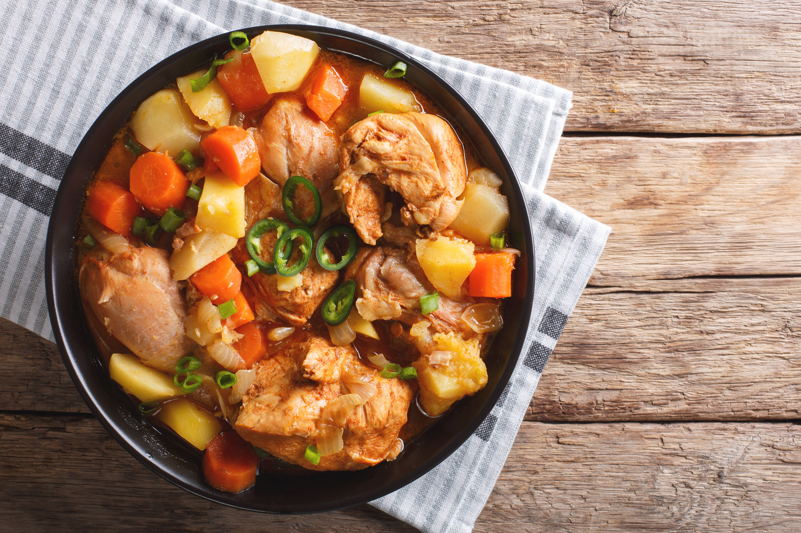

Dakdoritang

Description
Dakdoritang is a popular Korean stew dish. Although it seems and tastes very complex, it is actually a quick and easy meal to make.
A chicken drumbstick dish brewed in korean spcies and homestyle veggies, Dakdoritang is the perfect sweet and spicy stew to warm up on a cold winter day. Grab your aprons and let's get started!
Ingredients
- 6-8 chicken drumbsticks
- korean kimchi grade red pepper flakes
- 6 mniced garlic
- soysauce
- 2 potatoes cubed
- 1 onion cubed
- 1 carrot cubed
- korean red pepper paste
- suagr
- sesame oil
- white wine or rice wine
Steps
- deskin and clean drumbskicks
- mix soysauce, sugar, garlic, sesame oil, red pepper flakes, red pepper paste, and white wine in a bowl
- bring dumbsticks and 6 cups of water to a boil
- add in potatoes and carrots
- add sauce mixture
- cook for 10 minutes
- add cubed onions and cook for another 7 minutes
- serve dish over rice